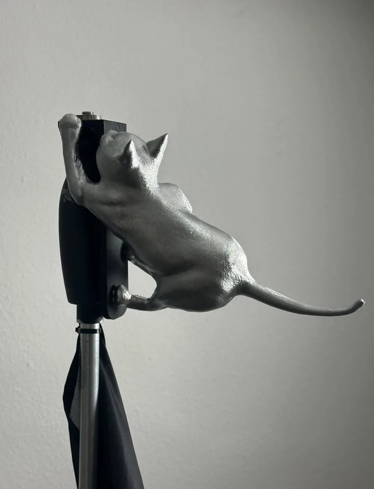
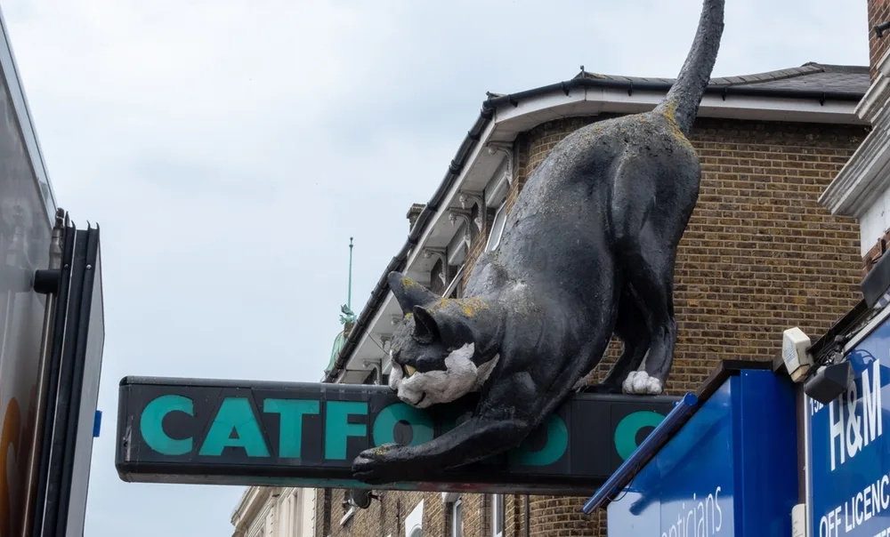
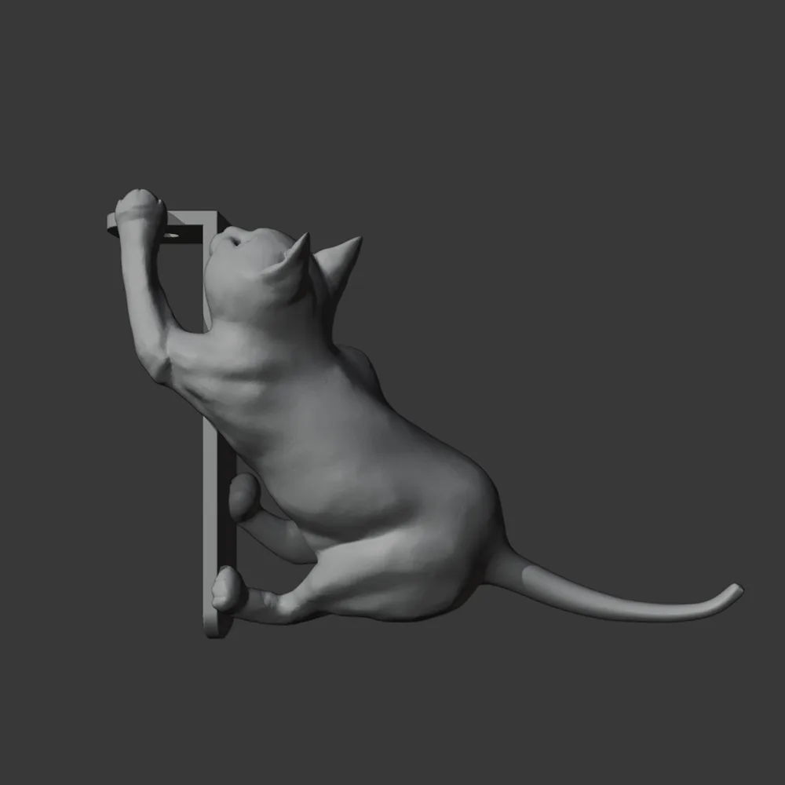
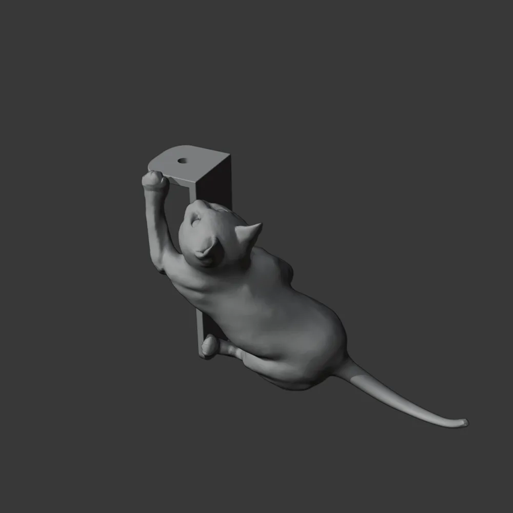
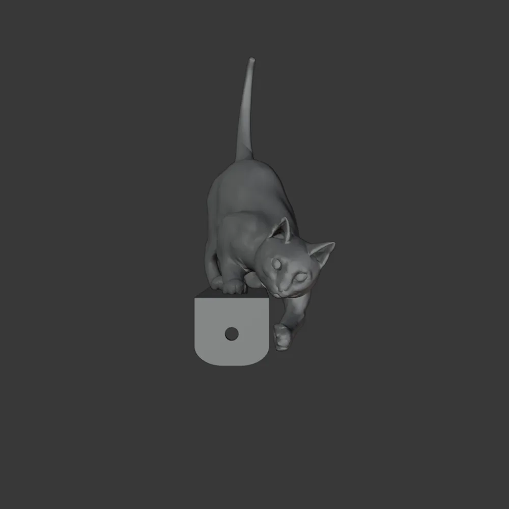
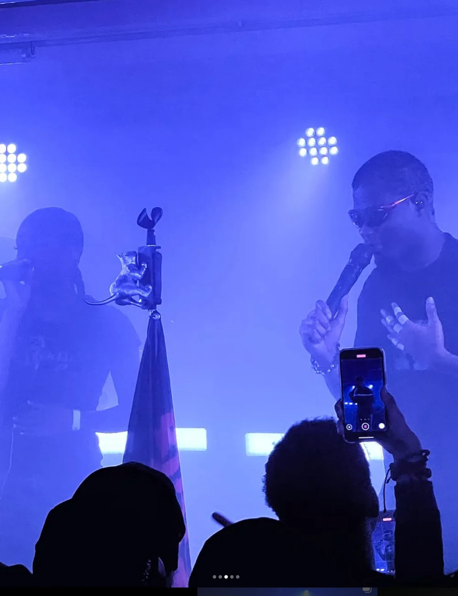
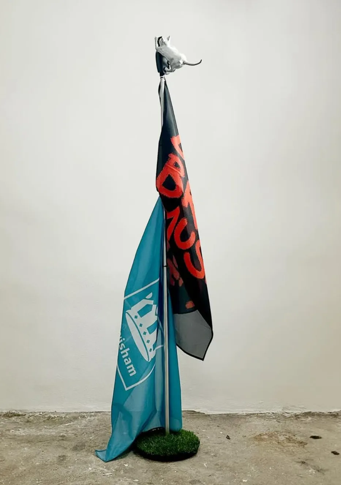

3D print
Jim Legxacy — Cold Lewisham Nights
A 3D replica of the Catford cat, the giant cat climbing over the Catford Centre sign in south-east London. It was modelled for 3D printing and mounted on Jim Legxacy's mic stand.


The model
The cat was rebuilt in its climbing pose and wrapped around a custom mount, so it clamps to the mic stand as if it's scaling the pole.



On stage
The finished print, on the mic stand and live.

